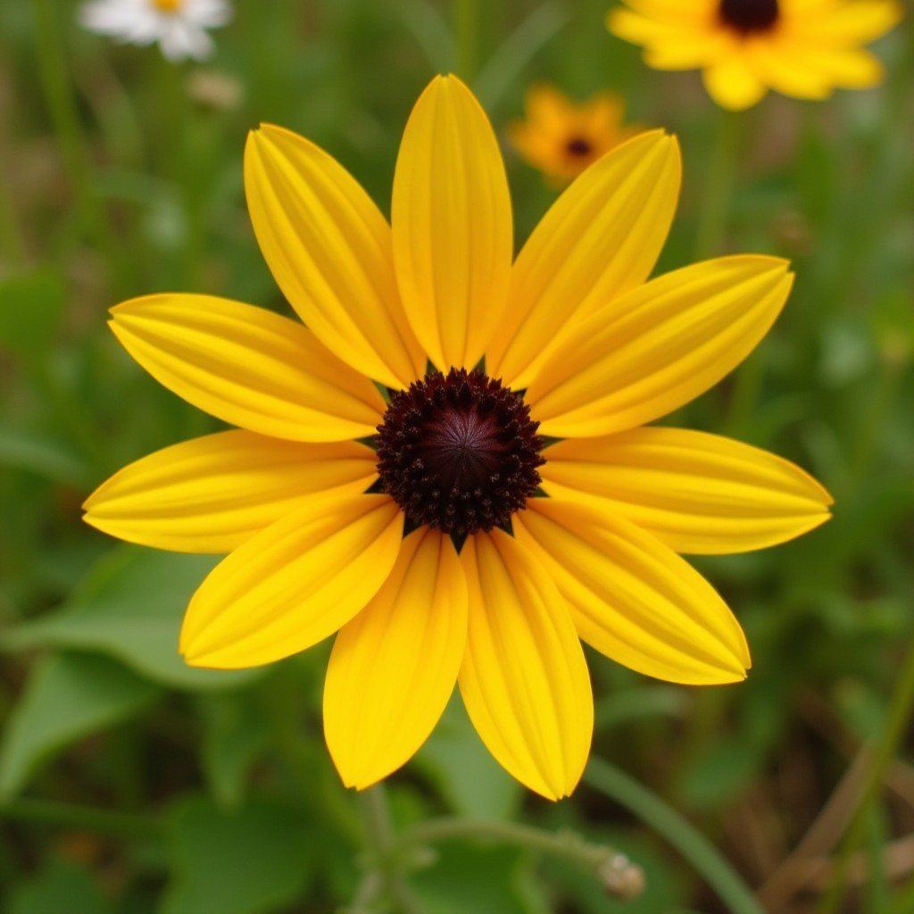
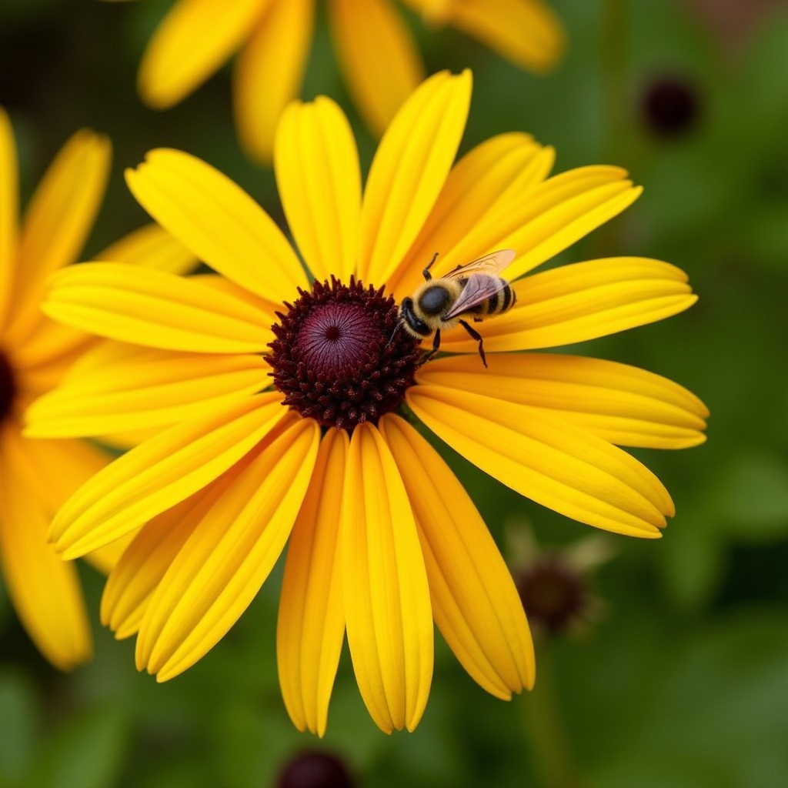
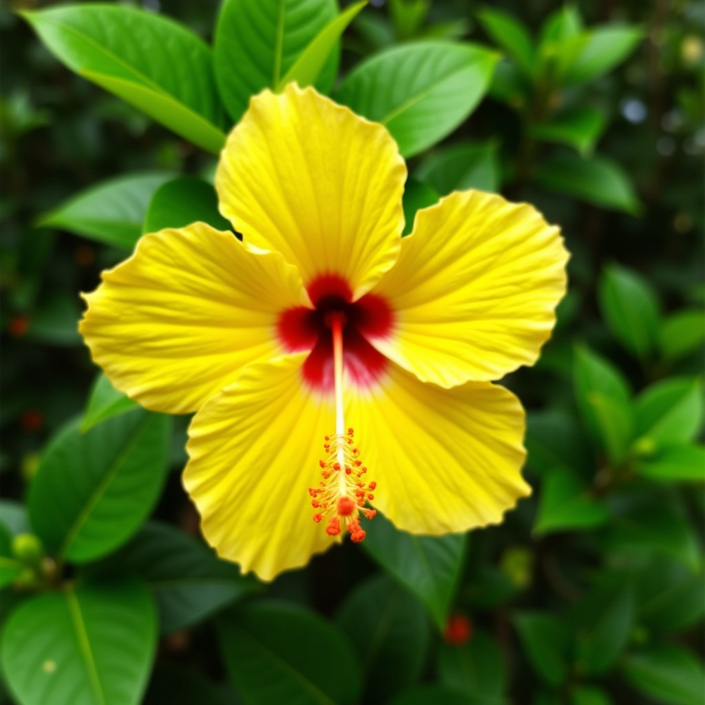
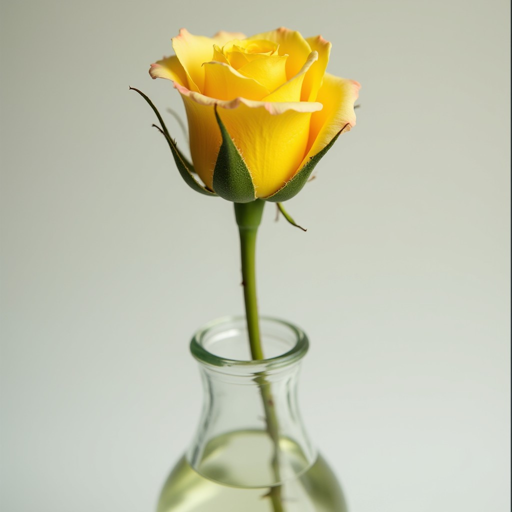
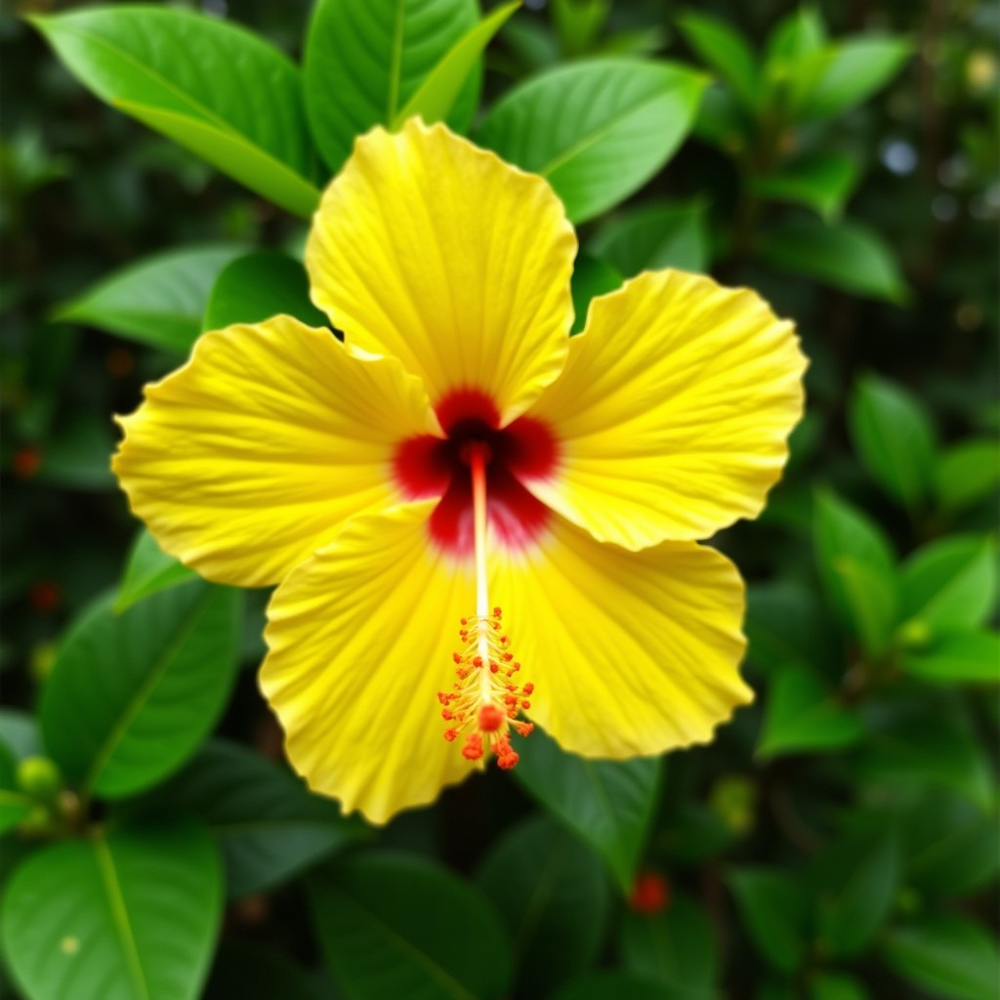
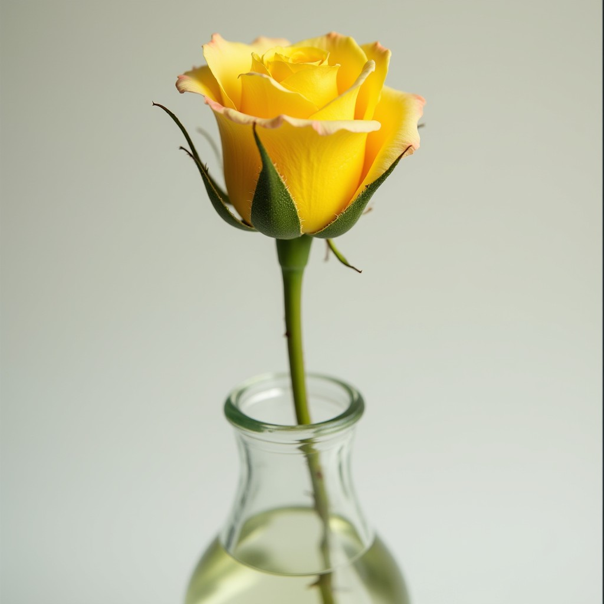
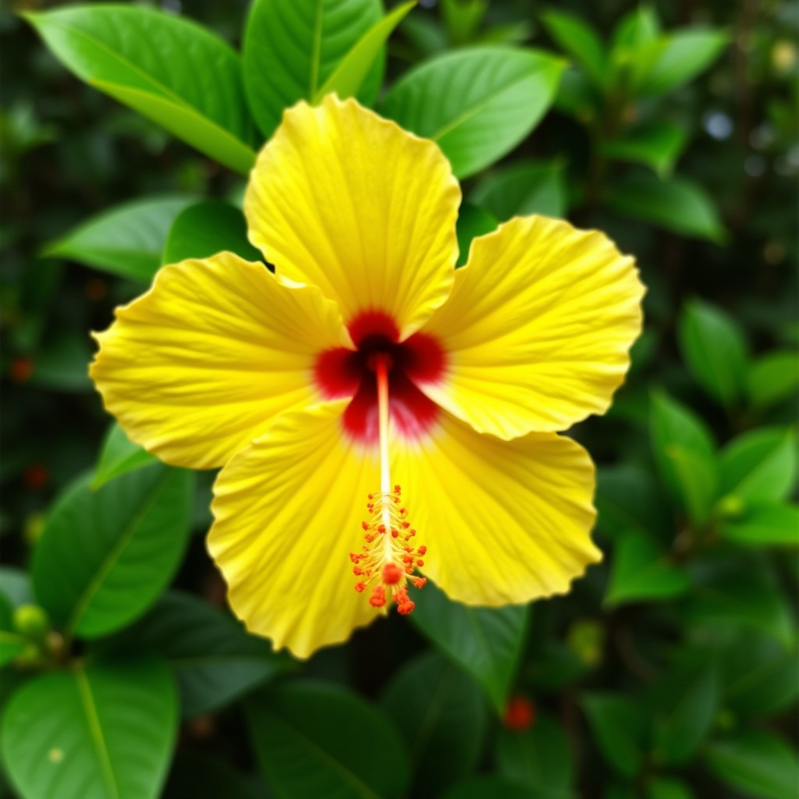
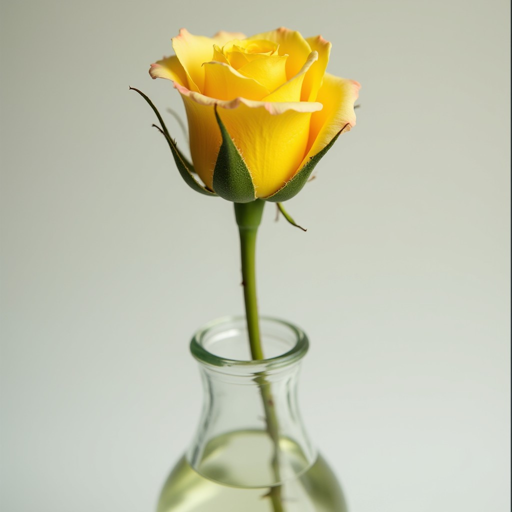

Yellow Flowers
On September 21, the world turns yellow. A sea of flowers brightens our days, celebrating friendship and hope. It is as if nature itself gives us a warm hug, reminding us of the beauty of connecting with others.

Ver flores


 




